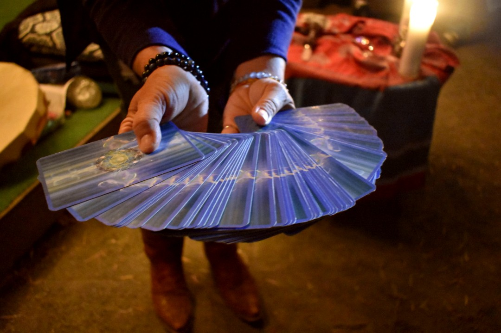
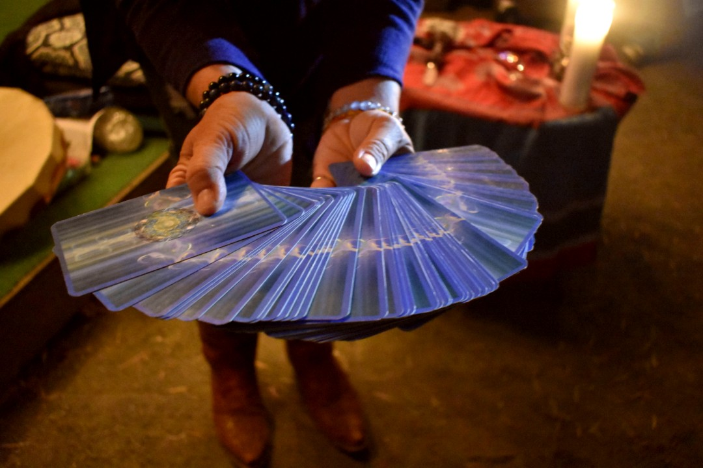

Witches have been a part of human history since the very beginning. Early witches were people who used their knowledge of the natural world to perform homeopathic and spiritual healing, wise women, or women in positions of power such as pagan leaders or divine oracles. They were goddesses, healers, midwives, shamans. This site explores the connotation of the label 'witch', from its persecution to its reclamation.
Today, some women feel it is important to realize and celebrate their own intuition, empathy, and connection to the earth. While they may or may not claim the title 'witch', they practice what feels right to them, remembering what those called witches did many years ago: healing, meditation, divination, and everything in between.
A Modern Full Moon Ceremony
Laurine Tonkin is a medium, psychic, spiritual healer, and teacher. She practices tarot, performs psychic readings, and leads full moon ceremonies in Morro Bay, California. Although some may associate these things with witchcraft, to her, it is a lifestyle that goes beyond a stereotype.


 



 />
/>
/>
/>